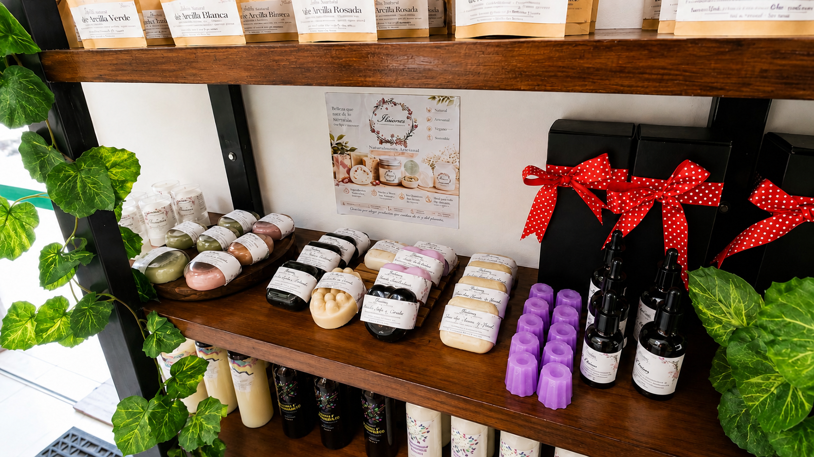

Selección cuidadosa
Opciones orientadas a complementar hábitos de bienestar.
Opciones de origen natural y soluciones artesanales seleccionadas para complementar hábitos de bienestar y cuidado cotidiano.

Conoce nuestra variedad de sabores elaborados con cultivo madre. Las descripciones se limitan a la información visible en cada producto y a sus posibles usos culinarios.
Estos productos se presentan como opciones alimentarias artesanales. No se les atribuyen efectos médicos ni sustituyen indicaciones profesionales.
Mascarillas artesanales para complementar distintas rutinas de cuidado facial. Explora cada variedad según el tipo de piel y el efecto cosmético indicado en su etiqueta.
Uso cosmético. Las descripciones expresan efectos de limpieza, apariencia y sensación de la piel sin atribuir propiedades médicas.
Opciones orientadas a complementar hábitos de bienestar.
No presentamos estos productos como sustitutos de tratamientos médicos.
Ante síntomas o condiciones de salud, la valoración profesional sigue siendo prioritaria.